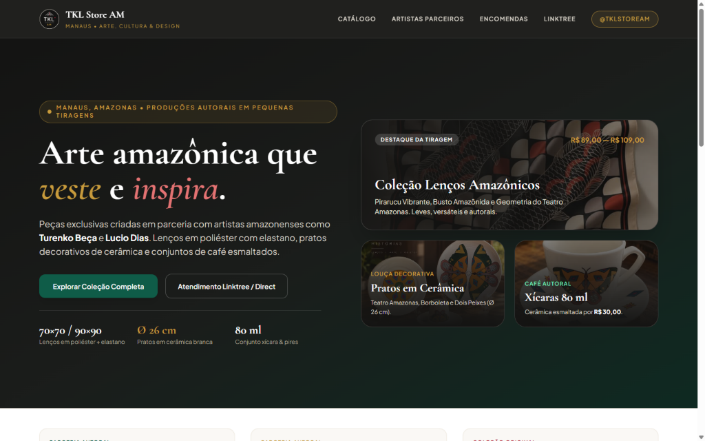
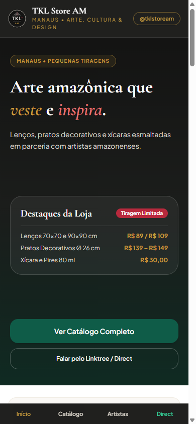
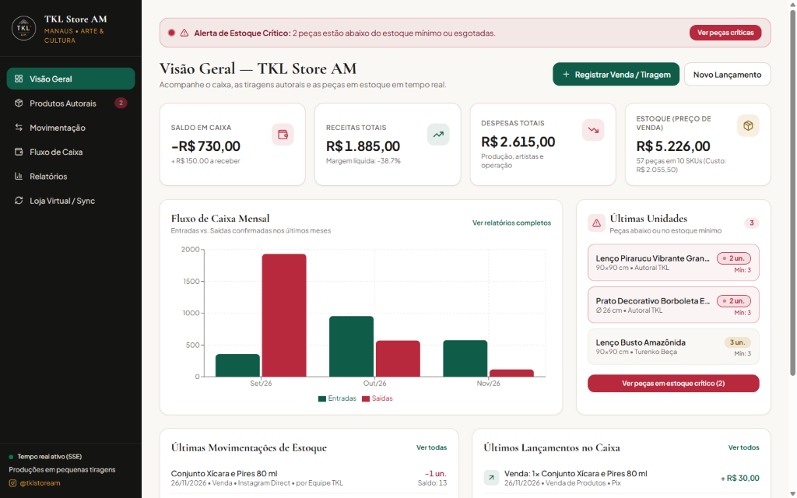
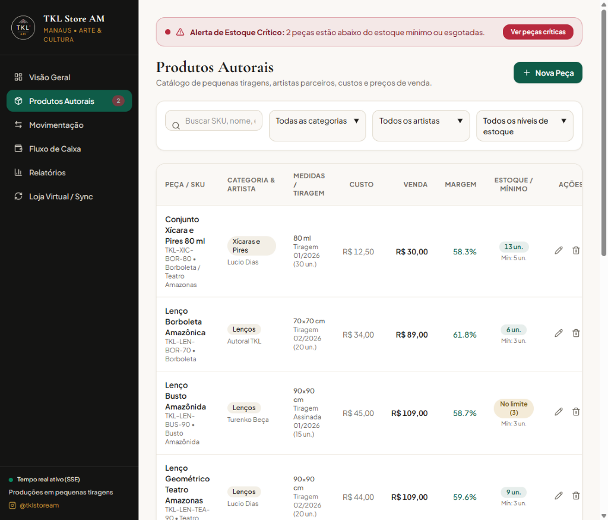
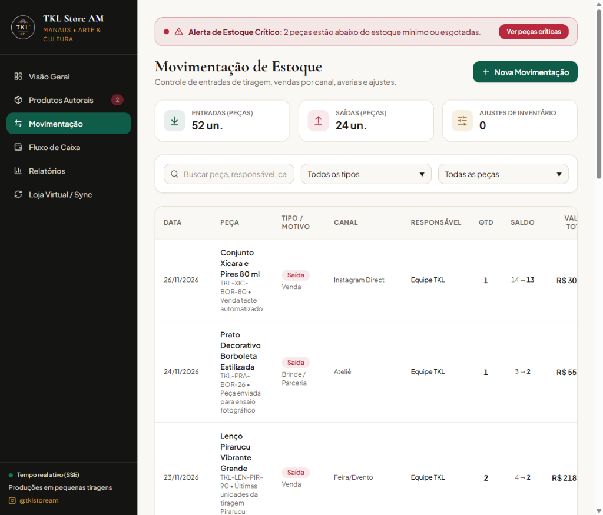
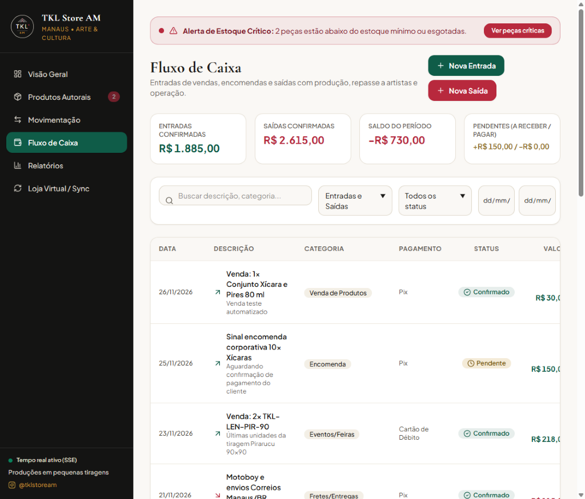
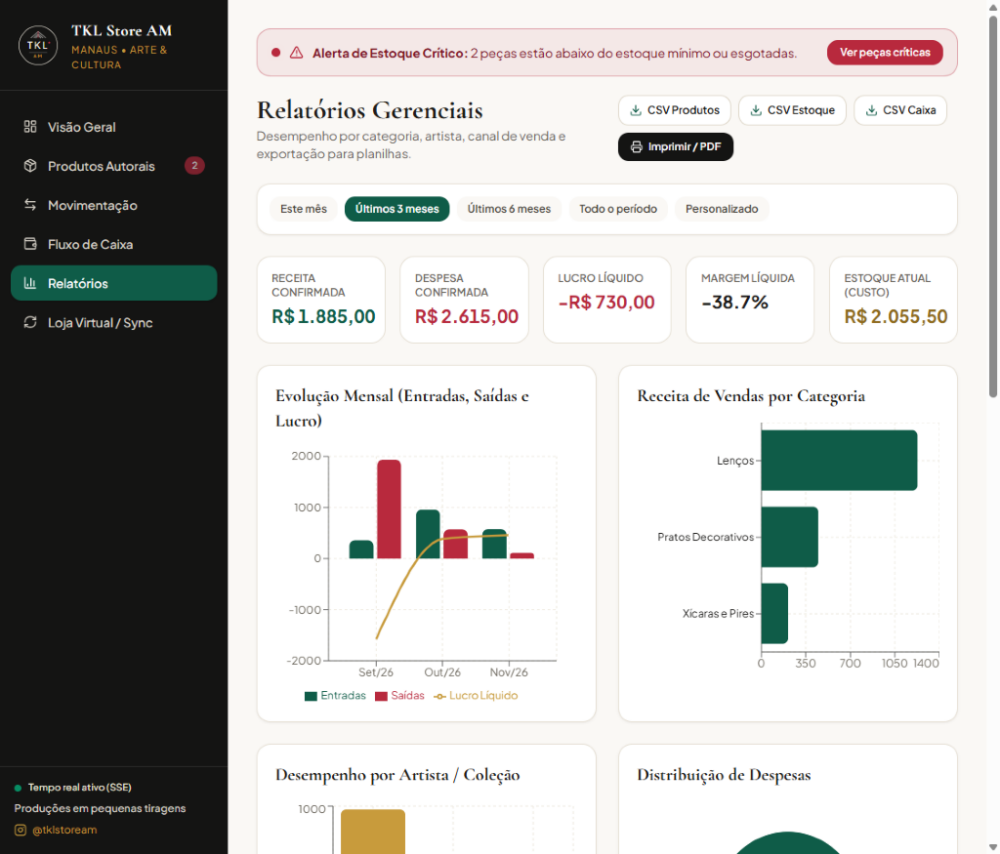
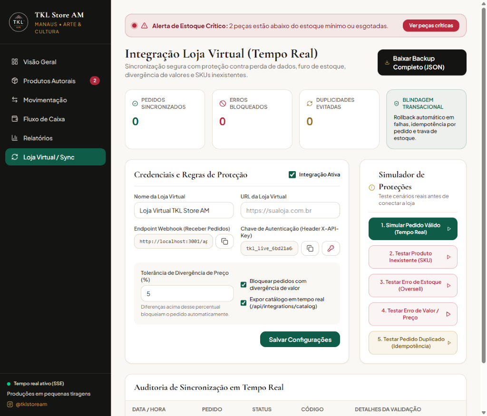

Proposta Visual & Arquitetura Digital • Manaus, Amazonas
TKL Store AM — Vitrine Pública & Plataforma de Gestão Financeira e Estoque
Apresentação completa do ecossistema desenvolvido para produções autorais em pequenas tiragens: vitrine digital responsiva (PC widescreen + Mobile 9:16), painel interno de controle com alertas críticos e motor de integração em tempo real com blindagem contra falhas.
Componentes Entregues
1. Vitrine Pública (Hospedagem Gratuita)
2. Gestão de Estoque & Tiragens
3. Fluxo de Caixa & Relatórios
4. Integração Tempo Real (SSE + Webhook)
Etapa 1 • Presença Fora do Instagram
Vitrine Pública Adaptativa (PC Widescreen & Mobile 9:16)
Página leve com fotos reais do perfil @tklstoream, filtro por categoria, layout em tela cheia no computador
e formato vertical 9:16 no celular, direcionando pedidos para WhatsApp ou Instagram Direct (ig.me/m/tklstoream) com mensagem pronta.


Etapa 2 • Controle Interno
Visão Geral, Estoque Mínimo e Rastreabilidade por Responsável
Painel executivo em tempo real com alerta visual de Estoque Crítico (peças abaixo do mínimo ou esgotadas), controle de tiragens por artista e registro obrigatório de quem movimentou cada item.



Etapa 3 • Financeiro & Análise
Fluxo de Caixa Integrado e Relatórios Gerenciais
Entradas e saídas sincronizadas automaticamente com vendas e produções, filtros por status e exportação em CSV/PDF.


Etapa 4 • Conectividade Segura
Integração Loja Virtual em Tempo Real com Blindagem de Dados

1. Trava de Estoque & Rollback
Impede venda acima do saldo disponível e desfaz a transação inteira se qualquer item falhar.
2. Validação de Valores & SKUs
Bloqueia produtos inexistentes/inativos e pedidos com divergência de preço fora da tolerância.
3. Idempotência & Backup JSON
Evita baixa duplicada por reenvio de webhook e permite download imediato de backup completo.
Plano de Implantação Sugerido
Fase 1 (Imediata — Custo Zero): Publicar a vitrine estática gratuitamente (GitHub Pages / Netlify Drop) e operar o painel de gestão internamente.
Fase 2 (Integração Completa): Conectar a loja virtual via API/Webhook ao painel de gestão e ao Instagram para baixa automática em tempo real.